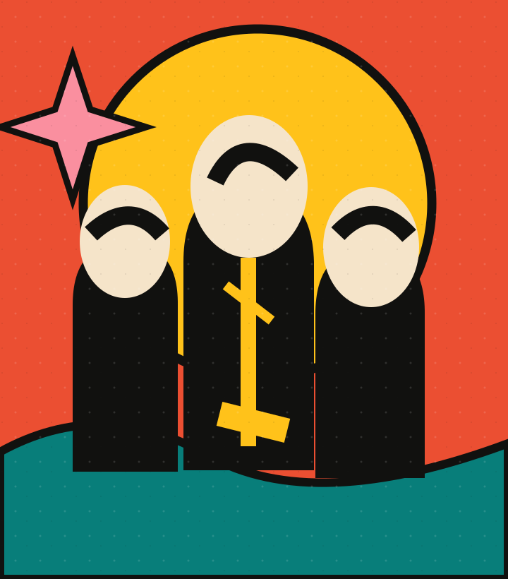
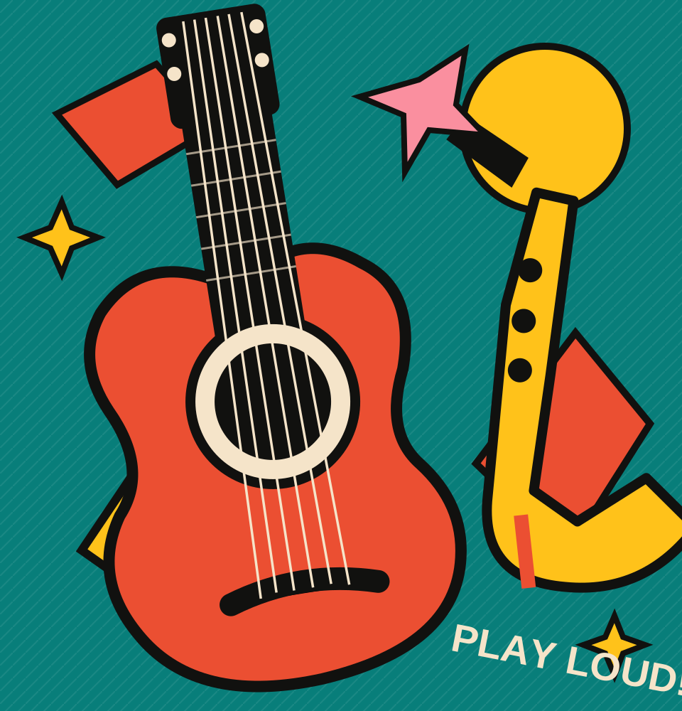
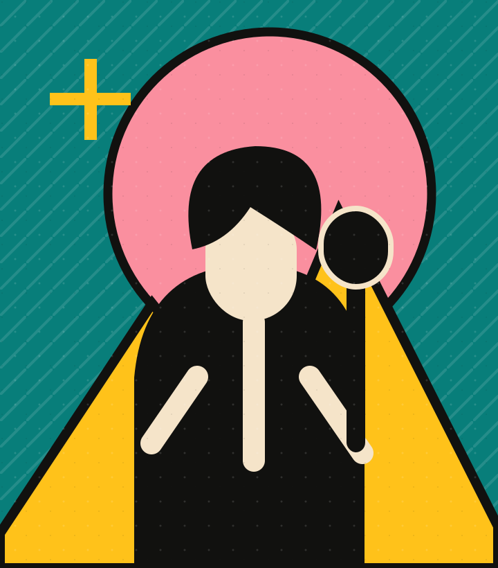
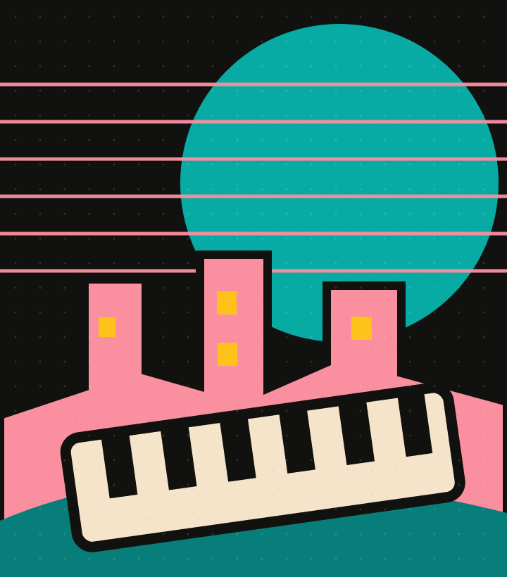
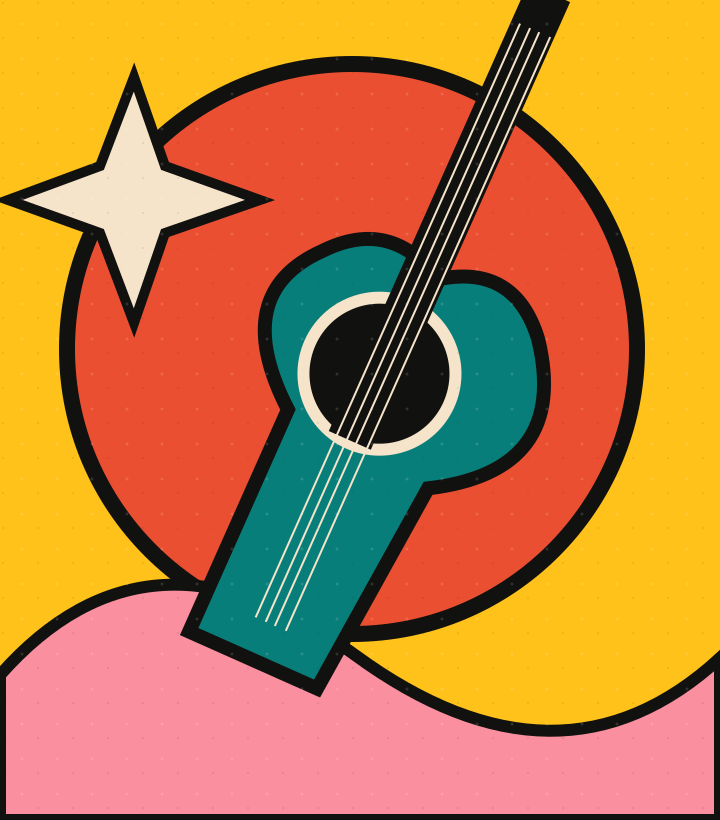
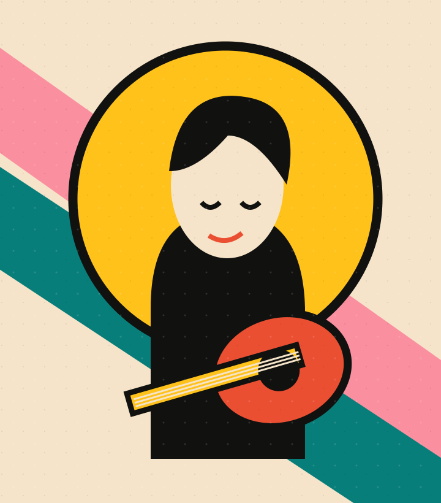
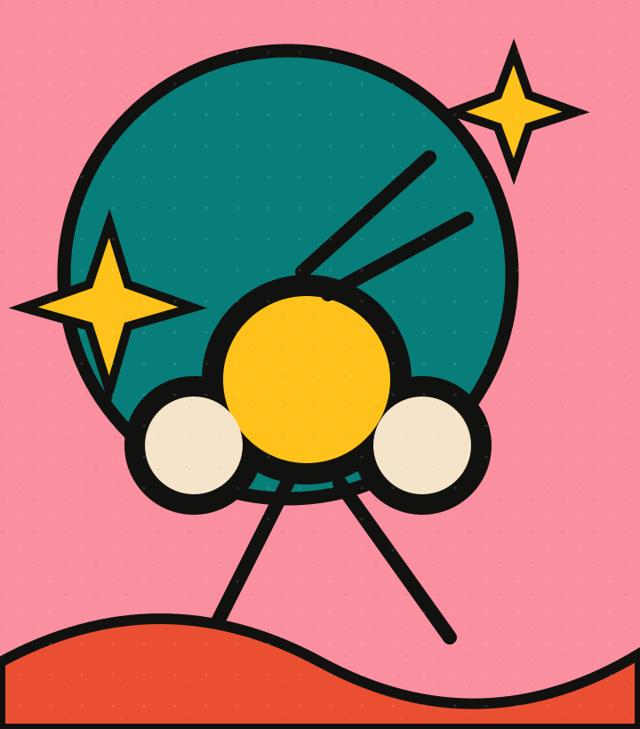
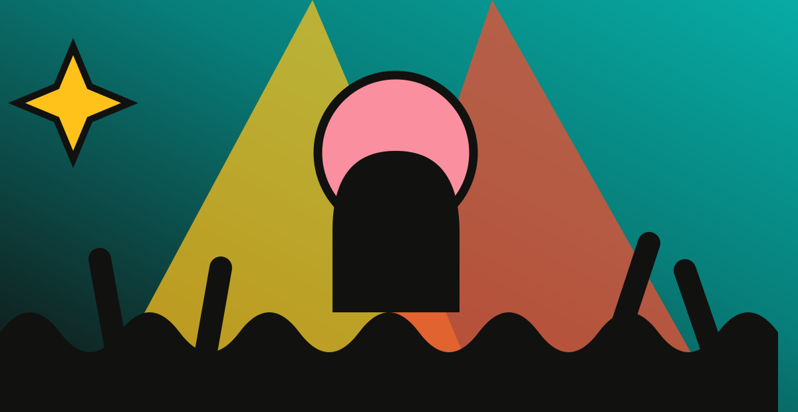
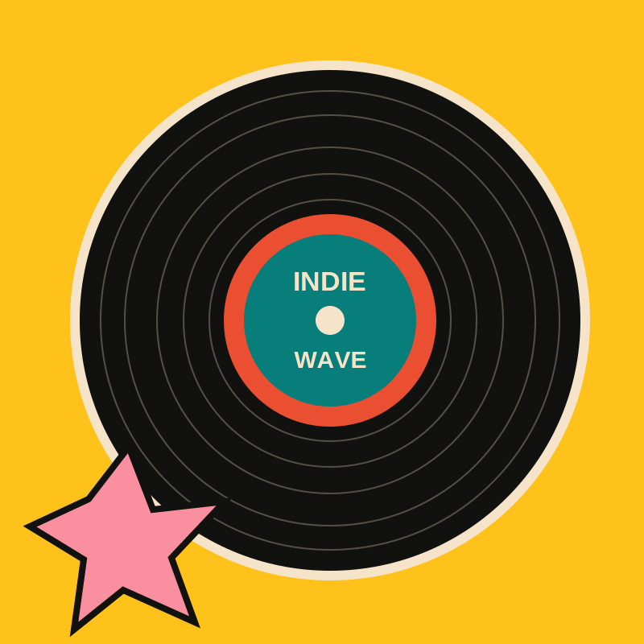

05.22 SATINDIE ROCK / 19:40
파도상점
우리의 하루를 파도처럼 흔드는 선명한 밴드 사운드
정해진 리듬은 없어. 우리의 소리만 있을 뿐.
서로 다른 음악이 만나 가장 자유로운 순간이 되는 곳.
도시의 공기를 흔들 이틀간의 인디 뮤직 페스티벌.
*본 사이트는 웹 제작용 가상 행사 시연입니다.

유명해서가 아니라, 좋아서 듣는 음악.
우리가 좋아하는 모든 사운드가 한자리에.
거친 기타 리프, 마음을 흔드는 보컬, 새벽을 닮은 신스 사운드까지. 장르와 규칙을 넘어 오직 음악으로 연결되는 이틀을 준비했어요. 잔디 위에 앉아도, 누구보다 크게 뛰어도 괜찮아요.
플레이리스트를 현실로.
무대 위에서 만날 우리의 사운드.

05.22 SAT우리의 하루를 파도처럼 흔드는 선명한 밴드 사운드

05.22 SAT밤이 오기 전부터 시작되는 반짝이는 멜로디

05.22 SAT익숙한 풍경을 낯설게 만드는 몽환적인 사운드

05.23 SUN행성 밖으로 튀어나갈 듯한 기타와 리듬

05.23 SUN작지만 오래 남는, 숨결이 가까운 음악

05.23 SUN서투른 여름의 마음을 노래하는 따뜻한 밴드
*라인업 및 출연진은 사이트 제작을 위한 가상의 설정입니다.

공연 밖의 순간마저 특별하게.
하루 종일 즐기는 우리의 놀이터.

아날로그 사운드로 만나는 뜻밖의 인생곡
일러스트, 굿즈, 독립 창작물까지 구경하기
마음껏 놀았던 순간을 특별한 한 컷으로
세 가지 프로그램 외에도 현장에서 만날 즐거움이 가득!
처음 와도 누구나 편하게 즐길 수 있도록
알아두면 좋은 안내를 모았어요.
실제 장소·대관 정보와 무관한 디자인 시연용 설정입니다.
샘플 행사 기준 입장은 양일 13:00부터, 메인 공연은 15:30부터 시작됩니다. 실제 운영되는 행사가 아닙니다.
상단 ‘티켓 예매’ 버튼을 누르면 별도로 제작된 예약 데모 페이지로 이동합니다. 입력 정보와 금액을 확인할 수 있으며 실제 결제는 발생하지 않습니다.
본 사이트는 가상 행사 시연으로, 실제 우천 진행 여부는 정해져 있지 않습니다. 일반적인 야외 공연에서는 기상 상황에 따라 공지가 달라질 수 있습니다.
레코드 라운지, 크리에이터 마켓, 포토 부스 등의 가상 체험 콘텐츠를 준비했습니다. 자세한 내용은 ‘전체 프로그램 보기’에서 확인해 주세요.